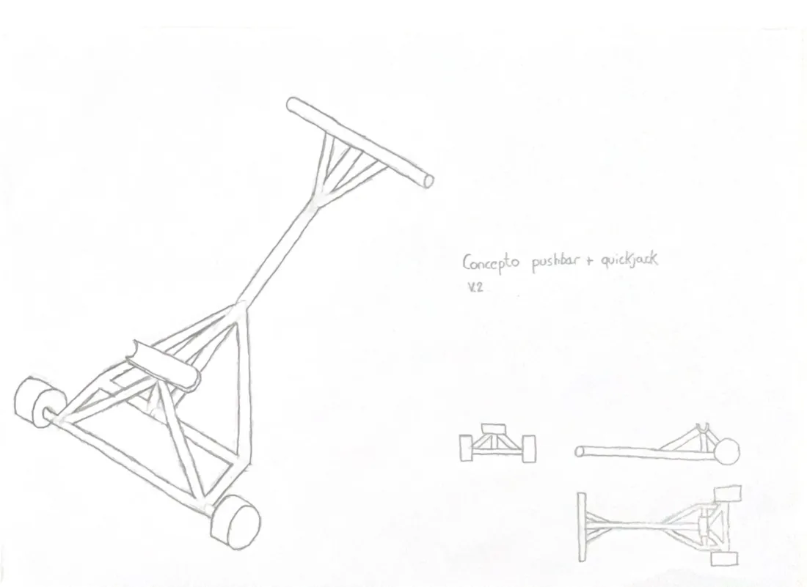
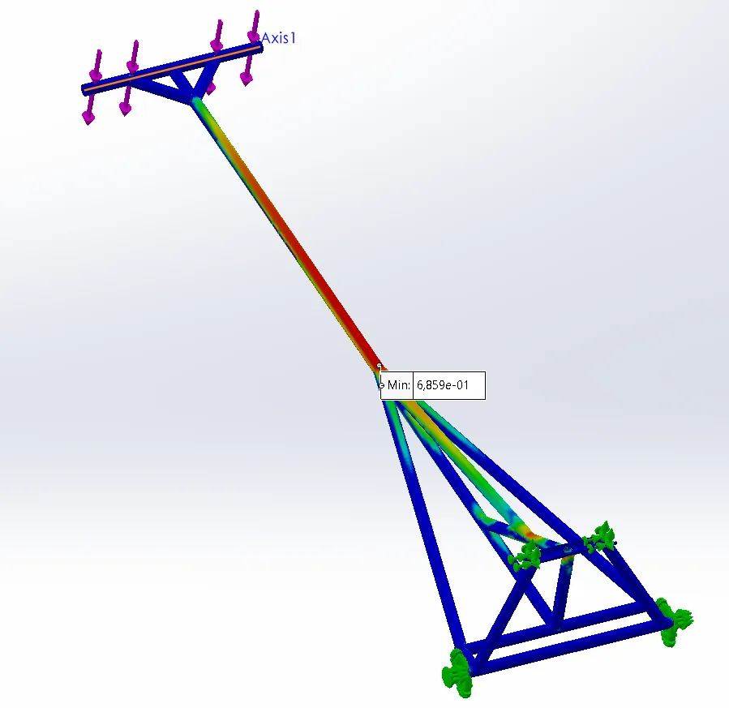
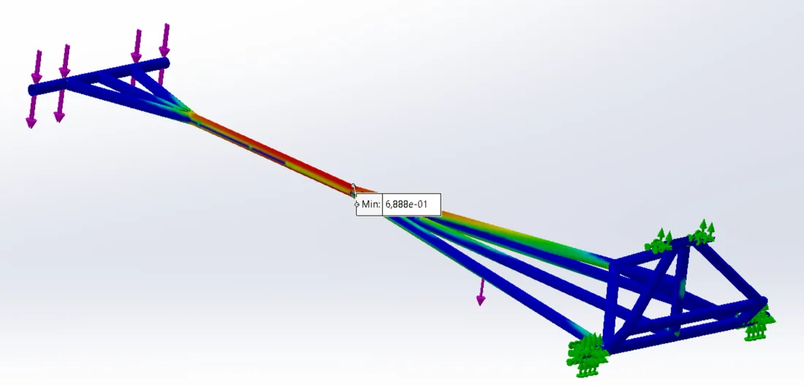
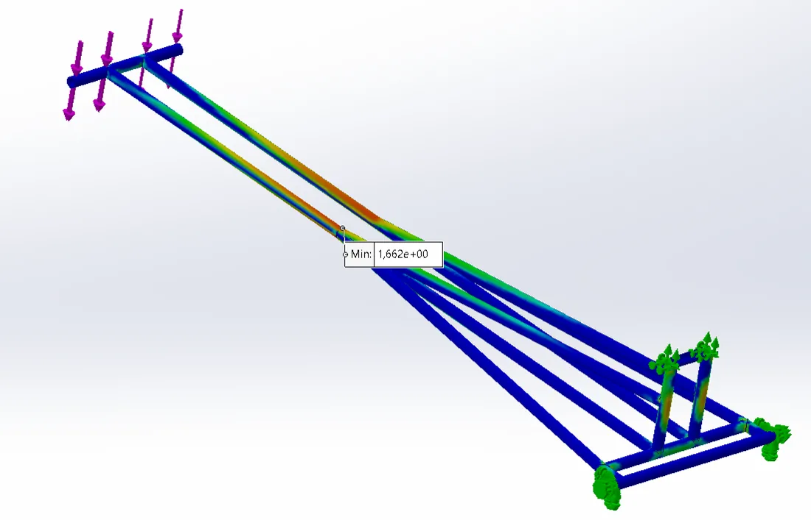
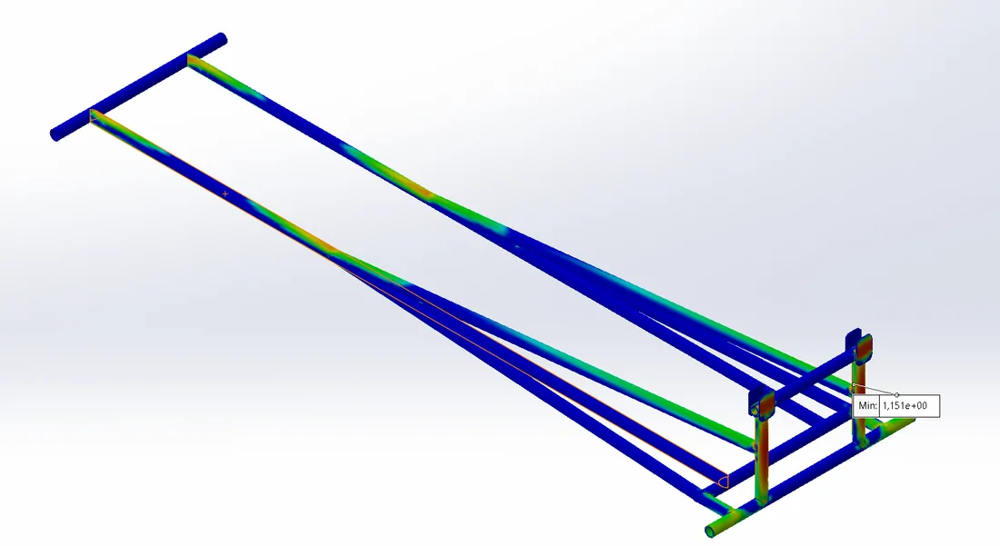
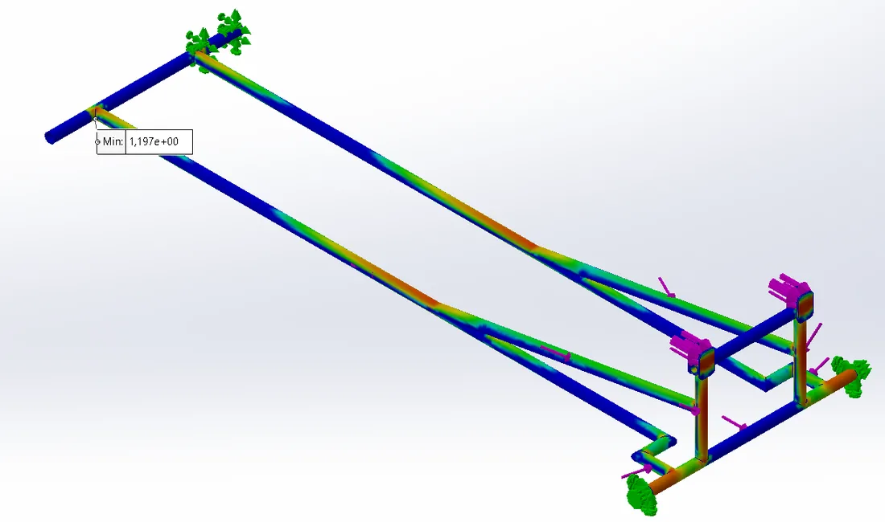
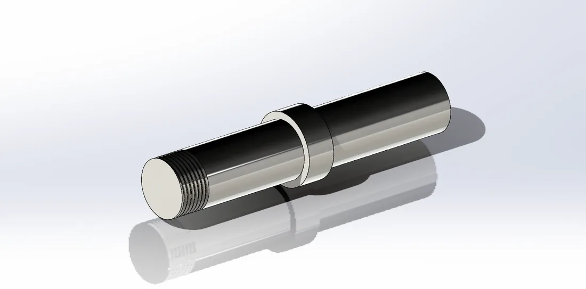
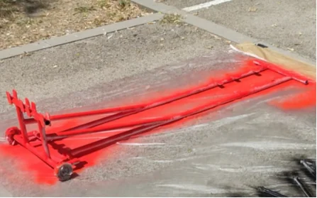

2023–24 · EUSS Motorsport, Frame & Body department · EM-04
Combined push-bar and quick-jack for the EM-04
The team's push-bar failed at the previous competition, and the old quick-jack had been sized for the lighter combustion car. Working with a new team member I was mentoring, I designed one device that does both jobs. Over 14 logged versions across six concepts, sized for a deliberately oversized 300 kg lift, the design converged on a 9.1 kg S355JR tube structure with a safety factor of 1.2.
- SolidWorks
- SolidWorks Simulation

- 14 versions Logged across six concepts, each with mass and safety factor
- 9.1 kg Final v7, down from 13.37 kg for v6.5.3 (−31.9 %)
- FoS 1.2 At a 300 kg design load, deliberately above the car's weight
- ≈ 367 N First-order estimate of the handle force to lift 3,000 N
01Requirements
The brief: replace the broken push-bar, lift the heavier electric EM-04 safely, comply with the 2024 rules, and size everything for about 300 kg so the team had margin when lifting the car.
| FSG 2024 rule | Requirement |
|---|---|
| T13.1.1, T13.1.4 | Removable push bar at the rear that lets two people push and pull the car while standing upright, and can slow, stop and pull it rearwards |
| T13.1.2, T13.1.3 | Red, with the university name clearly visible on a high-contrast background |
| T13.1.5, T13.1.6 | Carries an approved fire extinguisher and, for electric cars, two pairs of HV insulating gloves and a 1000 V CAT III multimeter |
| T13.2.1 | The jack must hold the car with all driven wheels at least 100 mm off the ground |
| T13.2.3 | In the lifted position the car must be stable, a driver must be able to get in and out safely, and the jack must stay within the car's projected area |
02Concept and sizing
The team had always built the push-bar and quick-jack as two separate devices. We found a combined design used by a team from Bangalore and adopted the idea. One device uses less material, so it costs less, and at competitions only one device has to be carried. In the first concept, the space under the bar that attaches to the chassis is where the car's main hub sits when the device is used as a push-bar.

| Dimension | Value [mm] | Basis |
|---|---|---|
| Lift height | 220 | 100 (rule) + 110 (chassis height) + 10 margin |
| Main-hub clearance | 325 | Minimum distance between the two tubes |
| Length | 1,800 | Overall length, used as the lever arm in the force estimate |
| Tube | 25 × 2.5 | 20 mm inner, 25 mm outer diameter |
A first-order lever balance gave the force an operator would need to lift the design load:
03Iteration log
We logged every version with its description, load, material, mass and safety factor. Packaging killed several concepts before they reached simulation: the frame had to clear the main hub and, later, the motor mounting plates.
| Version | Change | Mass [kg] | FoS at 300 kg |
|---|---|---|---|
| 1.0 | First concept, no dimensions | – | – |
| 2.0 / 2.1 | Optimised dimensions / handle moved outboard | – | – |
| 2.2 | Second support added | 9.22 | 0.68 |
| 2.3 | Second support reversed | 9.92 | 0.74 |
| 3.0, 4.0, 4.1 | New layouts that did not fit around the main hub | – | – |
| 5.0 | Inclined push-bar | 11.5 | 0.68 |
| 6 | Two central bars. Strong, but the support did not fit | 12.2 | 1.66 |
| 6.3 | Push-bar routed over the top | 9.1 | 0.76 |
| 6.5.2 | Optimised dimensions | 13.5 | 1.14 |
| 6.5.3 | Adapted to the motor mounting plates | 13.37 | 1.15 |
| 7 | Widened frame | 9.1 | 1.2 |
Version 6 showed that two central bars could carry the load with a safety factor of 1.66, but its support did not fit the car. Making that layout fit the motor plates pushed the mass to 13.37 kg for a safety factor of 1.15. Widening the frame in v7 brought the mass down to 9.1 kg, 31.9 % lighter than v6.5.3, while the safety factor rose to 1.2.





04Manufacturing
The frame is cut from 14 lengths of 25 × 2.5 mm tube, from 103 mm to 1,710 mm long, 10,177 mm in total, and welded. We designed a dedicated axle for the lifting wheels, and the finished device was painted red as T13.1.2 requires.


05Limitations and role
- Margin. A safety factor of 1.2 is modest, but it applies to a 300 kg load chosen to be above the car's weight, which adds margin in normal use.
- Simulation detail. The logfile records load, material, mass and safety factor for each version, but not the fixtures, mesh or load application. Recording those with each run would make the comparison between versions fully traceable.
- Testing. No physical load test was planned. A proof test at the design load would be the natural final check.
- Lever estimate. The 367 N handle force is a first-order balance and ignores the arc of the handle and the geometry of the lifting cradle.
I worked on this project with a new member of the department whom I was mentoring, from concept through simulation to the drawings and cut list.
Tools: SolidWorks, SolidWorks Simulation.
Sources: EUSS Motorsport, Push-bar + Quick-jack report (Frame & Body, 2023–24), design logfile and review slides (14/12/2023).